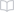
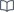

AltaIDE / Компоненты
IconToolbarsTBConfigurator
Набор иконок интерфейса.
Варианты
| Property 1 | Компонент |
|---|---|
| Read |  |
| Write | |
| Enter | |
| UpdateTree | |
| BackToSettings | |
| Restart | |
| Delete Value |

Состояния
| Default | Disabled | Active |
|---|---|---|
 |
Набор иконок интерфейса.
| Property 1 | Компонент |
|---|---|
| Read |  |
| Write | |
| Enter | |
| UpdateTree | |
| BackToSettings | |
| Restart | |
| Delete Value |
| Default | Disabled | Active |
|---|---|---|
 |